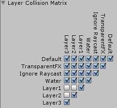

Layer-Based Collision Detection.
In Unity 3.x we introduce Layer-Based collision detection, which is a way to make Game Objects collide with another specific Game Objects that are tied up to specific layers.

Objects Colliding with their own layer.
In the image above you can see 6 GameObjects, (3 planes, 3 cubes) and the "Collision Matrix" to the right that states which Objects can collide with which layer. In the example, we have set the Collision Matrix in a way that only GameObjects that belong to same layers can collide.
Setting GameObjects to detect Collisions Based on Layers.
- Select a layer your Game Objects will belong to

- Repeat 1 for each Game Object until you have finished assigning your Game Objects to the layers.
- Open the Physics Preference Panel by clicking on .
- Select which layers on the Collision Matrix will interact with the other layers by checking them.

Page last updated: 2010-09-22